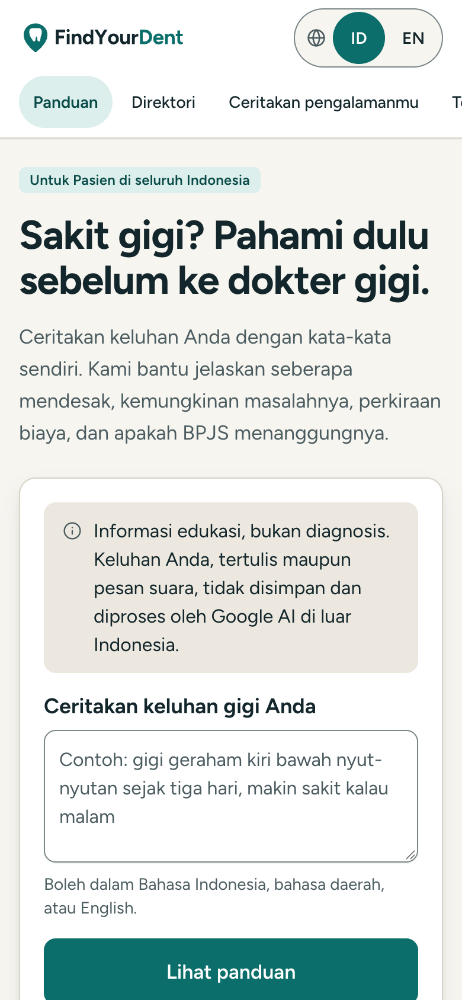
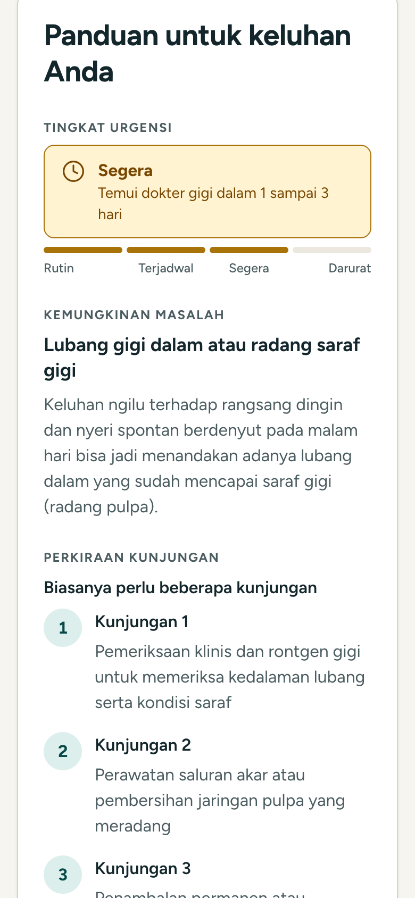
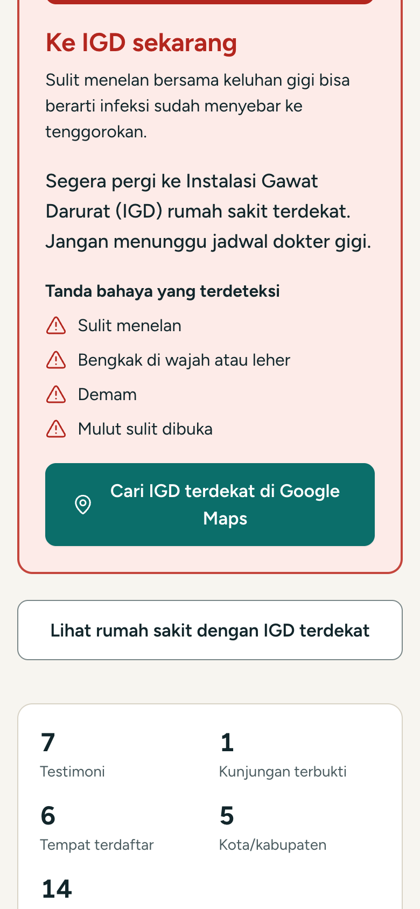
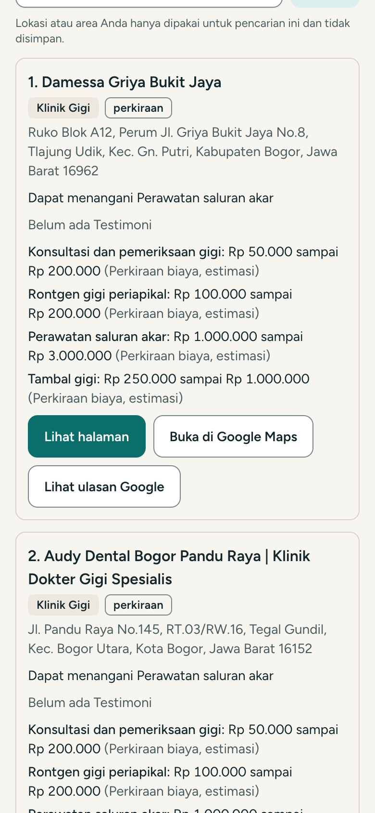
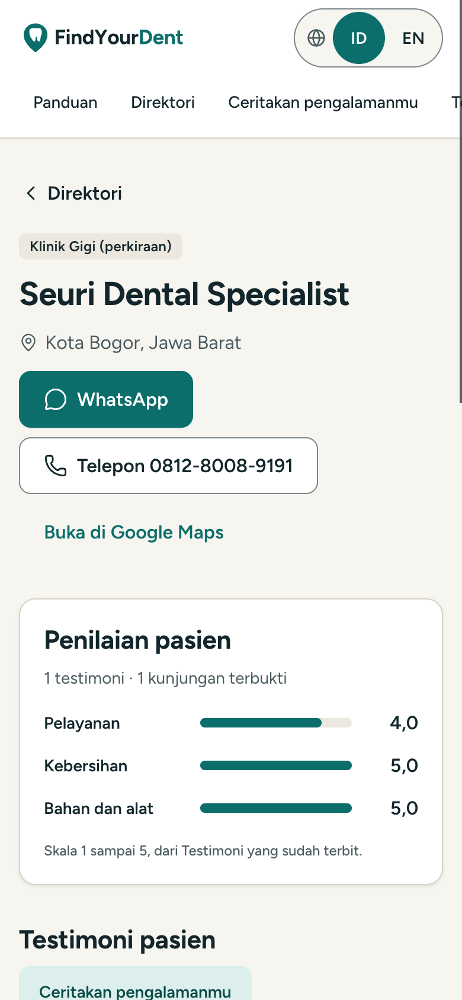

AI guidance on urgency, cost and BPJS cover, then a shortlist of dental providers Indonesians can trust.
of Indonesians aged 3 and over had a dental or oral problem in the past year.
of them were treated by a dental health worker.
of people not treated by a dental health worker said they felt no need to go.
Health articles, doctor chat and booking. No structured dental decision with cost and BPJS for this complaint.
Paid chat with a doctor and medicine delivery. Does not route the complaint to the right kind of dental provider.
Finds places with open star ratings. No urgency or cost, and reviews are not checked against a visit.
Type or speak the complaint in Indonesian, a regional language or English. The complaint text is never stored.
Urgency tier, likely category, visit journey, a cost estimate with why prices vary, and BPJS coverage. Red flags go straight to the emergency room.
Nearby providers that can treat this complaint, with testimonies from other patients and price signals.
After the visit the patient tells others. AI screens it against fixed rules, and a proof of visit earns a "proven visit" mark.





First-hand, moderated before publishing, and tied to a proof of visit. Providers can reply or report, never delete.
Red-flag phrases trigger emergency escalation before any AI call. The model can raise urgency, never lower it below a red flag.
A claimed page does not change shortlist order. No ads or per-lead fees, in line with Indonesia's dental ethics code.
must-escalate phrases sent to the emergency room without calling the model
ordinary complaints not escalated, including negations, slang and regional languages
unsafe medicine advice across the 40-case guidance evaluation
moderation decision accuracy, with zero rule-breaking testimonies published
| Measured on live models | Result |
|---|---|
| Emergency recall in guidance | 100% (8/8) |
| Category and visit-journey accuracy | 100% |
| BPJS accuracy | 87% (20/23) |
| Urgency-tier accuracy, gate 85% | 76% (28/37) |
| Lighthouse a11y / practices / SEO | 100 / 100 / 100 |
| Cloud cost, 300 sessions over 23 days | USD 16.75 |
Honest limits. 8 of the 9 urgency misses rate the case as more urgent than the label, the safe direction. Labels are not yet reviewed by a licensed dentist.
Free guidance answers a search moment: "my tooth hurts, what now?"
Each visit adds a moderated, proven testimony to that city's directory.
Providers verify their page and publish a dated price list.
Verified profile first, then intake and management tools.
kabupaten and kota already in the product's region data, across all 38 provinces
for patients, so demand comes from search: city and provider pages are indexable
city to prove the loop first, Surabaya, before repeating it in the next
"Tahu dulu, baru pilih." FindYourDent is live, safety-tested and cheap to run. We are looking for mentors, dental clinic partners and investors to turn it into the operating layer for Indonesian dental care.